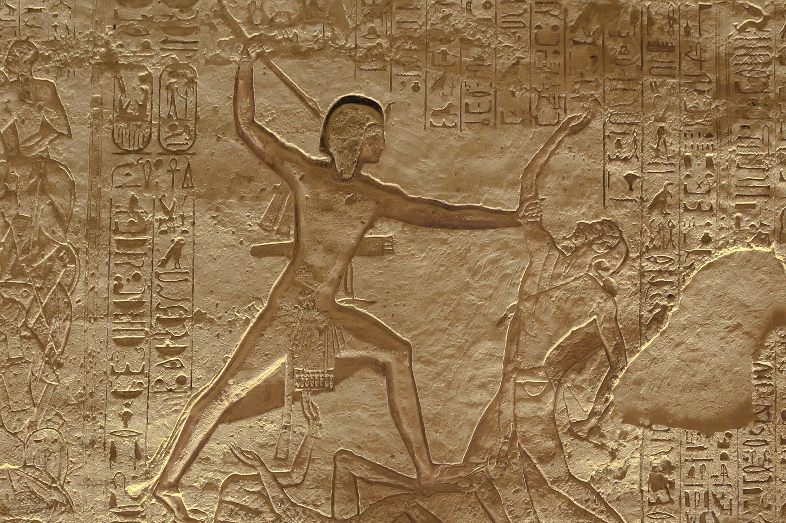

The Battle of Megiddo (fought 15th century BC) was fought between Egyptian forces under the command of Pharaoh Thutmose III and a large rebellious coalition of Canaanite vassal states led by the king of Kadesh. It is the first battle to have been recorded in what is accepted as relatively reliable detail, owing to the annals inscribed by the royal scribe Tjaneni on the walls of the temple of Amun at Karnak. The battle is also the first recorded use of the composite bow and the first body count. The Egyptian victory, followed by a seven-month siege of Megiddo, established Egyptian control over the northern Levant.
| Battle of Megiddo | |
|---|---|
 Thutmose III's annals at Karnak record the campaign. | |
| Date | Traditionally 16 April 1457 BC (date debated) |
| Location | Megiddo, Canaan (modern northern Israel) |
| Result | Egyptian victory; siege and capture of Megiddo |
| Belligerents | New Kingdom of Egypt vs. Canaanite coalition led by Kadesh |
| Commanders | Thutmose III vs. King of Kadesh |
At the death of Hatshepsut, the Canaanite city-states of the Levant, encouraged by the kingdom of Mitanni, rebelled against Egyptian overlordship and assembled at the fortress city of Megiddo, which guarded the strategic pass through the Carmel ridge on the trade route between Egypt and Mesopotamia. Thutmose III marched from Egypt along the coast and faced a council-of-war decision between three routes to Megiddo: two longer, safer roads, or the narrow Aruna pass, where his army would have to advance in single file. Thutmose chose the dangerous direct route — reasoning that his enemies would expect him to avoid it — and led the vanguard in person.
The gamble succeeded: the Egyptians emerged from the pass and deployed before the Canaanites had concentrated against them. Thutmose arrayed his army with the pharaoh commanding the centre on his chariot. The Canaanite coalition broke and fled toward the city walls; the gates were shut against the mass of fugitives, who had to be hauled up the walls by ropes improvised from clothing. The Egyptian victory was incomplete because the soldiers stopped to loot the enemy camp instead of pursuing and storming the open city — a lapse Thutmose rebuked bitterly, since, as the annals put it, capturing Megiddo was "the capture of a thousand towns".
The Egyptians settled into a siege lasting about seven months, building a moat and wooden palisade named "Thutmose is the besieger of the Asiatics". When Megiddo surrendered, the booty recorded at Karnak was immense: hundreds of chariots (some covered in gold), over two thousand horses, tens of thousands of livestock, and armour and weapons, besides hostages taken from the defeated princes to be raised at the Egyptian court. The victory inaugurated seventeen campaigns by which Thutmose consolidated an Egyptian empire reaching to the Euphrates. Megiddo's name entered later tradition as the prophesied site of the final battle — Armageddon derives from Har Megiddo, "Mount Megiddo".